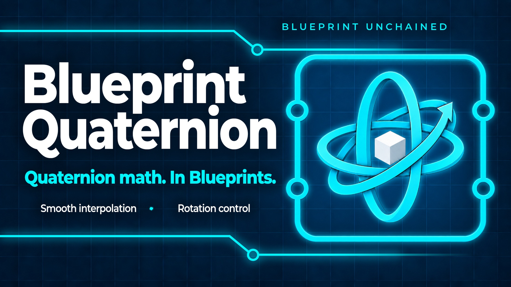
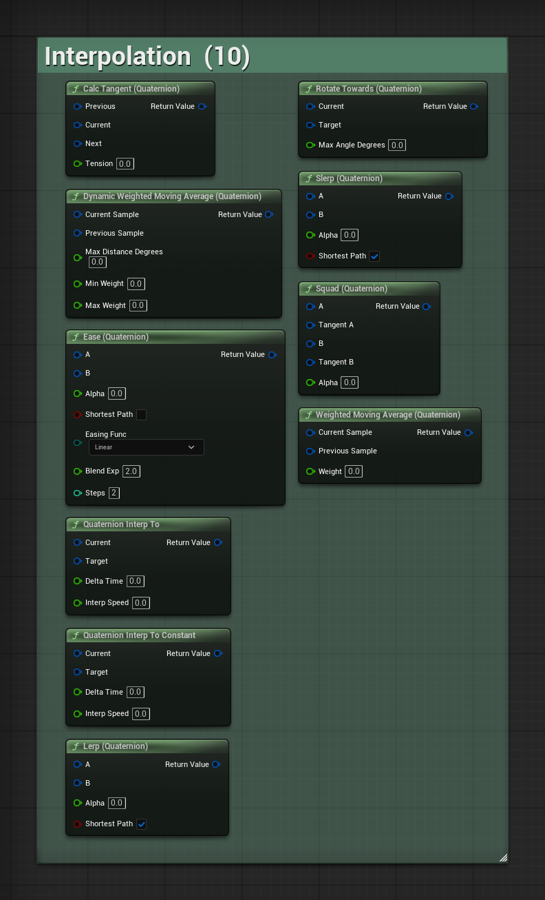
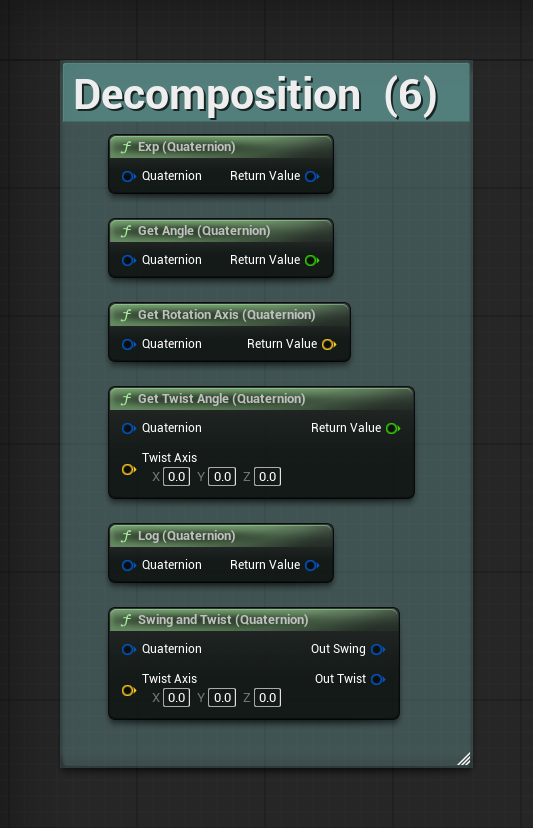
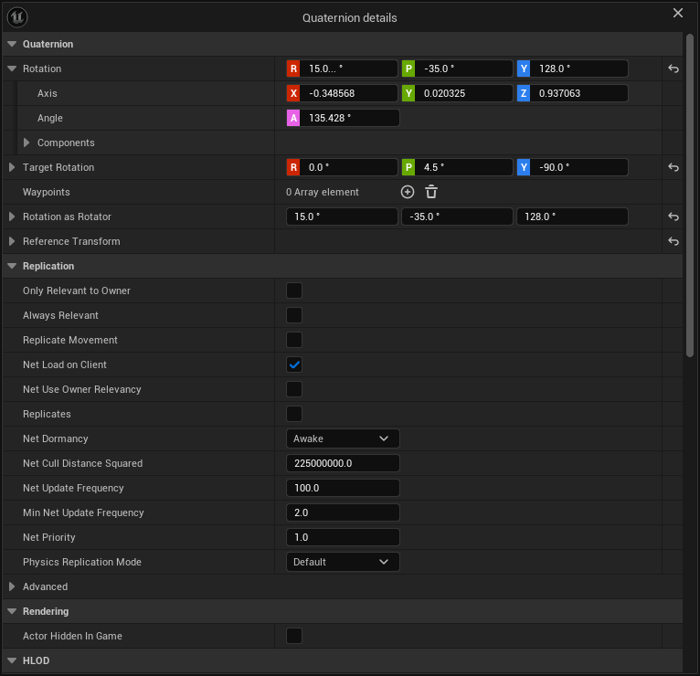

Blueprint Quaternion adds 85 nodes for working with 3D rotations in Blueprint. Use them to aim at a target, control turning speed, align objects with a surface or smooth rotation data from a tracked device.
The nodes work with quaternions, which represent 3D rotations without gimbal lock. You can create, combine, compare and blend rotations directly in your graphs. No C++ is required.
All nodes are pure functions: they return values without an execution wire. You can use them without placing an actor or setting up a runtime system.
You can search by name or keyword. For example, shortest arc finds Find Between Vectors, and swing finds Swing and Twist. The nodes lists all nine groups.
The library is marked BlueprintThreadSafe. Its nodes are also available in an Animation Blueprint's thread-safe update.
The optional quaternion display has one editor setting. See Turning the row off.
These conventions help you connect the nodes correctly and understand their results.
Every angle input and output uses degrees. This includes Angular Distance, Get Angle, Get Twist Angle and the length of a rotation vector.
Some of Unreal Engine's own quaternion functions use radians. Check the units when combining nodes from different libraries.
Compose(A, B) applies rotation B first, then rotation A to the result. This matches Unreal Engine's quaternion multiplication order.
The order matters. Reversing A and B usually produces a different rotation.
A quaternion used as a rotation needs unit length. Rotation nodes normalize their quaternion inputs to meet that requirement and return normalized rotations.
Zero-length or non-finite quaternion inputs are replaced with Identity, which means no rotation. Non-finite values include infinity and NaN, or "not a number".
The Components group is the exception. It works with the four stored numbers directly and does not normalize them.
A quaternion and its negation represent the same orientation. Nearly Equal compares orientations, so it treats them as the same rotation.
Use Equals Componentwise when you need to compare the stored X, Y, Z and W values, for example when debugging custom math.
All 85 nodes are under Math > Quaternion. The tables use the names shown in the Blueprint menu.
Create rotations from angles, directions, axes or target positions.
| Node | What it does |
|---|---|
| Identity (Quaternion) | Returns a rotation that does nothing. |
| Make Quaternion (Axis and Angle) | Creates a rotation around an axis. A zero-length axis gives Identity. |
| Make Quaternion (Euler) | Creates a rotation from X = Roll, Y = Pitch, Z = Yaw. |
| Make Quaternion (Roll, Pitch, Yaw) | Creates a quaternion from three angles, like Make Rotator. |
| Make Quaternion (Rotation Vector) | Uses the vector's direction as the axis and its length as the angle in degrees. |
| Make Quaternion From X | Points the forward axis along the vector. |
| Make Quaternion From Y | Points the right axis along the vector. |
| Make Quaternion From Z | Points the up axis along the vector. |
| Make Quaternion From XY | Uses the first vector for forward and adjusts right to be as close as possible to the second. |
| Make Quaternion From XZ | Uses the first vector for forward and adjusts up to be as close as possible to the second. |
| Make Quaternion From YX | Uses the first vector for right and adjusts forward to be as close as possible to the second. |
| Make Quaternion From YZ | Uses the first vector for right and adjusts up to be as close as possible to the second. |
| Make Quaternion From ZX | Uses the first vector for up and adjusts forward to be as close as possible to the second. |
| Make Quaternion From ZY | Uses the first vector for up and adjusts right to be as close as possible to the second. |
| Make Quaternion From Axes | Creates a rotation from three axis vectors. |
| Find Look At Quaternion | Creates a rotation that looks from one point towards another. |
| Find Relative Look At Quaternion | Creates a look-at rotation relative to another transform. |
| Find Between Vectors | Finds the shortest rotation from one direction to another. |
| Find Between Normals | Finds the shortest rotation between two unit-length directions. |
| Break Quaternion (Axis and Angle) | Returns an axis and an angle in degrees. |
| Break Quaternion (Roll, Pitch, Yaw) | Returns three angles, like Break Rotator. |
Convert between quaternions and other rotation formats.
| Node | What it does |
|---|---|
| To Euler (Quaternion) | Returns Euler angles as X = Roll, Y = Pitch, Z = Yaw. |
| To Rotation Vector (Quaternion) | Returns the rotation axis multiplied by the angle in degrees. |
| To Rotator (Quaternion) | Converts the rotation to a Rotator. |
| To Quaternion (Rotator) | Converts a Rotator to a quaternion. |
| To Vector (Quaternion) | Returns the forward direction. |
| To Transform (Quaternion) | Creates a transform with this rotation, zero location and a scale of one. |
| To Matrix (Quaternion) | Converts the rotation to a matrix. |
| To Quaternion (Matrix) | Reads a rotation from a matrix. |
| To String (Quaternion) | Creates text you can display with Print String. |
Combine rotations or calculate how they differ.
| Node | What it does |
|---|---|
| Compose Quaternions | Applies B, then A. See Compose (A, B) applies B, then A. |
| Inverse (Quaternion) | Returns the rotation that undoes the input rotation. |
| Delta (Quaternion) | Returns the rotation that takes A to B. |
| Scale Angle (Quaternion) | Multiplies the rotation angle by a value while keeping the same axis. |
| Get Shortest Arc With | Keeps the same orientation and adjusts its sign for the shortest path to a reference rotation. |
Apply rotations to vectors and transforms.
| Node | What it does |
|---|---|
| Rotate Vector (Quaternion) | Applies the rotation to a vector. |
| Unrotate Vector (Quaternion) | Applies the inverse rotation to a vector. |
| Get Forward Vector (Quaternion) | Returns the forward axis. |
| Get Right Vector (Quaternion) | Returns the right axis. |
| Get Up Vector (Quaternion) | Returns the up axis. |
| Get Axes (Quaternion) | Returns all three axes. |
| Transform Quaternion | Applies a transform's rotation to a quaternion. |
| Inverse Transform Quaternion | Applies the inverse of a transform's rotation to a quaternion. |
| Make Transform (Quaternion) | Creates a transform from location, quaternion rotation and scale. |
| Break Transform (Quaternion) | Returns a transform's location, quaternion rotation and scale. |
Make Transform and Break Transform let you keep the rotation as a quaternion during these operations, without converting it to a Rotator.
Interpolation blends between rotations. Use these nodes for smooth turns and moving targets.

| Node | What it does |
|---|---|
| Slerp (Quaternion) | Blends between two rotations. Changing Alpha at a constant rate gives constant angular speed. Includes a shortest-path option. |
| Lerp (Quaternion) | Blends components linearly and normalizes the result. Includes a shortest-path option. |
| Ease (Quaternion) | Blends rotations using an easing curve. |
| Quaternion Interp To | Moves towards a target each frame, slowing down as it approaches. |
| Quaternion Interp To Constant | Moves towards a target at a fixed speed in degrees per second. |
| Rotate Towards (Quaternion) | Moves towards a target by no more than the given angle. |
| Squad (Quaternion) | Builds a smooth path through a series of rotation keys. |
| Calc Tangent (Quaternion) | Calculates a tangent for Squad from three consecutive rotation keys. |
| Weighted Moving Average (Quaternion) | Smooths rotation data with a fixed weight. |
| Dynamic Weighted Moving Average (Quaternion) | Smooths rotation data with a weight that increases as samples become further apart. |
Enable shortest path to use the smaller turn between two orientations. This is useful for cameras and aiming.
Disable it when the quaternion values are chosen to describe a longer turn. A quaternion and its negation have the same orientation but can produce different paths when this option is off.
Split a rotation into parts or read its angle and axis.

| Node | What it does |
|---|---|
| Swing and Twist (Quaternion) | Splits a rotation into a twist around an axis and the remaining swing. |
| Get Twist Angle (Quaternion) | Returns the twist angle in degrees. |
| Get Angle (Quaternion) | Returns the rotation angle in degrees. |
| Get Rotation Axis (Quaternion) | Returns the rotation axis. |
| Log (Quaternion) | Converts a quaternion to its logarithm for advanced rotation math. |
| Exp (Quaternion) | Calculates the quaternion exponential, used to convert back from that form. |
Use Swing and Twist when you need to control rotation around one axis separately. For example, you can limit a joint's twist while keeping its swing.
Check a rotation or compare it with another.
| Node | What it does |
|---|---|
| Angular Distance (Quaternion) | Returns the angle between two rotations in degrees. |
| Normalize (Quaternion) | Returns a unit-length quaternion. |
| Is Normalized (Quaternion) | Checks whether the quaternion has unit length. |
| Nearly Equal (Quaternion) | Checks whether two orientations match within a tolerance. |
| Not Nearly Equal (Quaternion) | Returns the opposite of Nearly Equal. |
| Is Identity (Quaternion) | Checks whether the quaternion represents no rotation. |
| Is Finite (Quaternion) | Checks that all components are finite: no infinity or NaN values. |
| Select Quaternion | Chooses one of two quaternions based on a condition. |
For example, use Angular Distance to compare an object's current rotation with the rotation that would face a target.
| Node | What it does |
|---|---|
| Random Quaternion | Creates a random rotation using the same angle distribution as Random Rotator. |
| Random Quaternion From Stream | Creates that rotation from a random stream. |
| Random Quaternion (Uniform) | Creates a rotation with an even distribution across all orientations. |
| Random Quaternion (Uniform) From Stream | Creates a uniform rotation from a random stream. |
| Random Quaternion In Cone | Creates a random rotation within a cone, useful for spread and scatter. |
Use Random Quaternion to match Unreal Engine's Random Rotator. Use Random Quaternion (Uniform) when all orientations should have equal probability.
Use a stream version when you need repeatable results. The same seed and sequence of calls produce the same sequence of rotations.
These nodes work directly with X, Y, Z and W. Use them for custom math or to inspect stored values. They do not normalize inputs or results.
| Node | What it does |
|---|---|
| Make Quaternion (Components) | Creates a quaternion from X, Y, Z and W. |
| Break Quaternion (Components) | Returns X, Y, Z and W. |
| To Vector4 (Quaternion) | Returns the four components as a Vector4. |
| To Quaternion (Vector4) | Creates a quaternion from a Vector4. |
| Add (Quaternion) | Adds matching components. |
| Subtract (Quaternion) | Subtracts matching components. |
| Scale Components (Quaternion) | Multiplies every component by a number. |
| Dot (Quaternion) | Returns the dot product of the four components. |
| Size (Quaternion) | Returns the quaternion's length. |
| Size Squared (Quaternion) | Returns its squared length. |
| Equals Componentwise (Quaternion) | Compares the stored components, including their signs. |
The plugin adds an expanded quaternion display to the Details panel. It provides Euler angles, an axis and angle, and the raw components.

The header shows Euler angles. Expand the row to see axis and angle. Expand Components to see X, Y, Z and W.
Drag a numeric field to adjust it, as you would with a Transform. Axis labels, colours and tooltips follow Unreal Engine's settings. For example, a project using Forward, Left and Up labels shows those names here too.
You can paste a Rotator or raw quaternion components onto the row. You can also edit quaternion values with multiple objects selected.
The custom display applies to quaternion properties throughout the editor, including engine assets.
To return to the engine's standard display, turn off Editor Preferences > Plugins > Blueprint Quaternion > Override the quaternion details panel row.
The change takes effect immediately. It applies only to your user, so it does not change your teammates' preferences.
These examples show how to combine the nodes for common rotation tasks.
Rotate Towards stops at the target without turning past it. You can also use Quaternion Interp To Constant, which accepts a speed in degrees per second. If the node that applies the rotation needs a Rotator, convert the result with To Rotator (Quaternion).
Keep the multiplication order in mind: Compose applies B first, then A.
Use Find Between Normals with the object's up direction and the surface normal. This gives the shortest rotation that aligns those directions.
Compose this adjustment with the object's current rotation. Use the current rotation as B and the adjustment as A so that the adjustment is applied after the current rotation.
Use Find Look At Quaternion to calculate the rotation towards the target. Then use Angular Distance to compare it with the object's current rotation. The result is in degrees.
Use Weighted Moving Average for rotation data that shakes or changes too sharply. Use Dynamic Weighted Moving Average when you want the smoothing weight to respond to larger changes between samples.
Common uses include head tracking, hand tracking and a camera following a physics object.
Turn shortest path off on Slerp and use quaternion values that describe the longer turn. For example, a target built as a 270-degree axis-angle rotation can follow that long path.
With shortest path enabled, Slerp reaches the same final orientation by turning 90 degrees in the opposite direction.
Connect To String (Quaternion) to Print String to display the quaternion's value.
Check the order of the inputs to Compose Quaternions. Compose(A, B) applies B first, then A.
Also check whether your inputs describe local or world rotations. Both need to use the space expected by the operation.
Check for a degrees/radians mismatch. Every angle pin in this plugin uses degrees. Some engine quaternion functions use radians.
One radian is about 57.2958 degrees. Convert the value if the connected nodes use different units.
Check the tolerance and the input values. Nearly Equal compares orientations and treats a quaternion and its negation as equal. Small differences may be too small to see but larger than the selected tolerance.
Use Equals Componentwise if you need to compare the stored numbers.
Check the shortest-path option. If quaternion values come from another system, their signs may change even when the orientation changes smoothly.
Use Get Shortest Arc With to choose a sign relative to a reference rotation without changing the orientation.
NaN means "not a number". Use Is Finite to check the quaternion before the operation and inspect the other numeric inputs too.
Rotation nodes replace zero-length or non-finite quaternion inputs with Identity. The Components nodes work directly with numbers and do not provide that normalization.
15.0... °The dots mean that the displayed number has been rounded. The row shows three decimal places.
Conversions between a quaternion and Euler angles can introduce tiny rounding differences. For example, 15 degrees may read back as 15.000000000000004 degrees.
Open Components to inspect the stored quaternion values.
Open Editor Preferences > Plugins > Blueprint Quaternion and check the override option. It is enabled by default, but each user can turn it off independently.
For help, bug reports or feature requests, contact tomasz.klin+blueprintquaternion@gmail.com.
Include your Unreal Engine version and plugin version. A graph screenshot and a small Blueprint that reproduces the problem are helpful. This manual covers plugin version 1.0.0.